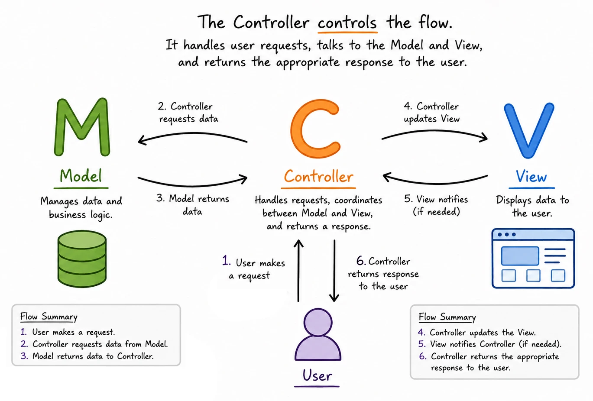

Entendendo a Arquitetura MVC: Um Guia para Iniciantes
À medida que suas aplicações Express crescem além de exemplos simples, você começa a encontrar problemas frustrantes: seu arquivo server.js passa a ter centenas de linhas e se torna impossível de navegar. Encontrar o código que manipula dados do usuário significa rolar por definições de rota, lógica de modelo e consultas ao banco de dados, tudo misturado. Adicionar uma nova funcionalidade requer alterações espalhadas por várias partes do mesmo arquivo. A depuração se torna um pesadelo porque tudo está interconectado de maneiras confusas.
Esses problemas não são exclusivos de você ou das suas aplicações. Todo desenvolvedor os enfrenta à medida que os projetos crescem de protótipos simples para aplicações reais. A solução não é escrever um código melhor na mesma estrutura, mas mudar fundamentalmente a forma como você organiza seu código. É aqui que entram os padrões arquiteturais, e o mais importante para aplicações web é o Model-View-Controller (MVC).
O Problema de "Tudo em um Único Arquivo"
Imagine que você está construindo um site simples de e-commerce que começou com apenas algumas rotas: uma página inicial, uma lista de produtos e um formulário de contato. Inicialmente, ter tudo no server.js parecia ótimo. Mas, à medida que o site cresce, você adiciona contas de usuário, carrinhos de compras, processamento de pedidos, painéis administrativos e gerenciamento de inventário. De repente, seu arquivo server.js contém:
- Manipuladores de rota para dezenas de páginas diferentes
- Funções que validam a entrada do usuário e processam pedidos
- Consultas ao banco de dados espalhadas por diferentes rotas
- Lógica de negócios misturada com lógica de apresentação
- Manipulação de erros duplicada em vários lugares
Isso cria o que os desenvolvedores chamam de "código espaguete" – tudo fica emaranhado, tornando quase impossível entender, modificar ou manter. Quando você precisa alterar a forma como os produtos são exibidos, pode acidentalmente quebrar a lógica de processamento de pedidos. Quando você corrige um bug na autenticação de usuário, pode introduzir problemas no carrinho de compras.
Desenvolvedores profissionais resolvem esse problema usando padrões arquiteturais que fornecem maneiras comprovadas de organizar o código. Esses padrões não são regras arbitrárias, mas soluções que evoluíram ao longo de décadas para lidar com os problemas reais que ocorrem em aplicações em crescimento.
O que é a Arquitetura MVC?
O Model-View-Controller (MVC) é um padrão de design de software que organiza o código separando diferentes tipos de responsabilidades em três componentes distintos. Em vez de ter todo o seu código misturado, o MVC cria limites claros entre diferentes preocupações:
- Model: Gerencia dados e lógica de negócios – o "o quê" da sua aplicação
- View: Gerencia a interface do usuário e a apresentação – o "como" parece
- Controller: Coordena entre o Model e a View – o "quando" e o "qual"
Pense no MVC como um restaurante bem organizado: a cozinha (Model) concentra-se totalmente em preparar a comida de acordo com as receitas e gerenciar os ingredientes. A equipe do salão e o design do cardápio (View) focam em apresentar a comida de forma atraente e criar uma experiência agradável para o cliente. Os garçons (Controller) coordenam a comunicação entre a cozinha e os clientes, anotando pedidos, entregando a comida e garantindo que tudo flua sem problemas. Cada área tem responsabilidades claras e ninguém interfere no trabalho alheio.
Padrões arquiteturais como o MVC não são apenas conceitos acadêmicos – eles são soluções práticas para problemas reais que todo desenvolvedor encontra. Eles representam a sabedoria coletiva de milhares de desenvolvedores que enfrentaram os mesmos desafios que você está enfrentando agora. Aprender esses padrões é como aprender técnicas comprovadas que evitam que você tenha que resolver esses problemas do zero.
Por que o MVC Resolve Problemas Reais
A arquitetura MVC aborda os problemas específicos que tornam as aplicações difíceis de manter e expandir:
Separação de Responsabilidades
Ao dividir as responsabilidades entre Model, View e Controller, diferentes tipos de alterações afetam diferentes partes da sua base de código. Precisa alterar como os dados do produto são validados? Você só mexe no Model. Quer redesenhar a página de exibição do produto? Você só modifica a View. Precisa adicionar uma nova rota ou alterar o fluxo entre as páginas? Você se concentra no Controller. Essa separação significa que você pode fazer alterações com confiança, sem se preocupar em quebrar funcionalidades não relacionadas.
Colaboração em Equipe
No desenvolvimento profissional, diferentes membros da equipe frequentemente se especializam em áreas diferentes. Designers trabalham nas Views, especialistas em banco de dados trabalham nos Models e arquitetos de aplicações trabalham nos Controllers. O MVC torna essa colaboração possível porque cada pessoa pode trabalhar em sua área sem entrar em conflito com as outras. Mesmo como um desenvolvedor solo, essa separação ajuda você a se concentrar em um tipo de problema de cada vez.
Reutilização de Código
Componentes em uma aplicação MVC podem ser reutilizados em diferentes partes da aplicação. O mesmo Model de produto que manipula dados para a página de listagem de produtos pode ser usado para a página de detalhes do produto, o carrinho de compras e o sistema de inventário administrativo. A mesma lógica de Controller de autenticação pode proteger várias rotas diferentes. Isso elimina a duplicação e garante a consistência.
Testes e Depuração Mais Fáceis
Com uma separação clara, você pode testar cada componente independentemente. Você pode testar funções do Model com dados de amostra para garantir que elas lidem com casos limítrofes corretamente. Você pode testar a lógica do Controller para verificar se ele direciona as requisições adequadamente. Você pode testar Views para confirmar se elas exibem os dados corretamente. Quando ocorrem bugs, a estrutura organizada torna muito mais fácil identificar qual componente é o responsável.
Os Componentes MVC em Detalhes
Model: A Camada de Dados e Lógica
O Model é responsável por gerenciar os dados da sua aplicação e implementar a lógica de negócios. A lógica de negócios refere-se às regras e operações que definem como sua aplicação funciona – não apenas armazenar e recuperar dados, mas aplicar as regras que tornam sua aplicação única.
Para uma aplicação de e-commerce, as responsabilidades do Model podem incluir:
- Validar se os endereços de e-mail estão formatados adequadamente
- Calcular os custos de frete com base na localização e no tamanho do pedido
- Determinar se um usuário se qualifica para um desconto
- Verificar se os itens estão em estoque antes de permitir compras
- Processar transações de pagamento e atualizar o inventário
O Model interage com bancos de dados, APIs externas, arquivos ou quaisquer outras fontes de dados, mas ele nunca sabe ou se importa com a forma como esses dados serão exibidos para os usuários. Essa separação significa que você poderia alterar completamente o design do seu site sem tocar em nenhum código do Model, ou poderia adicionar um aplicativo móvel que usa os mesmos Models com uma interface completamente diferente.
View: A Camada de Apresentação
A View é responsável por apresentar dados aos usuários de uma forma compreensível e visualmente atraente. Em aplicações web, as Views são tipicamente modelos HTML preenchidos com dados, mas o conceito se estende a qualquer componente de interface do usuário.
Você já esteve trabalhando com Views sem perceber. Cada arquivo de modelo EJS que você cria é um componente View. Esses modelos se concentram puramente na apresentação: como exibir uma lista de produtos, como formatar uma página de perfil de usuário, como mostrar mensagens de erro ou como renderizar um menu de navegação.
As Views devem conter uma lógica mínima – apenas o suficiente para formatar e exibir dados, mas nenhuma regra de negócio ou processamento de dados. Por exemplo, uma View pode formatar uma data para exibição ou fazer um laço por uma lista de itens, mas não deve calcular preços, validar a entrada do usuário ou tomar decisões sobre quais dados mostrar.
Controller: A Camada de Coordenação
O Controller atua como o coordenador entre Models e Views, manipulando o fluxo de requisições e respostas. Os Controllers recebem a entrada do usuário (como clicar em um link, enviar um formulário ou visitar uma URL), determinam o que precisa acontecer, coordenam com os Models para obter ou processar dados e, em seguida, coordenam com as Views para apresentar os resultados.
Em aplicações Express, os Controllers são implementados como manipuladores de rota – as funções que respondem a requisições HTTP específicas. Você tem escrito código de Controller toda vez que cria uma rota que processa requisições e decide o que enviar de volta ao usuário.
Os Controllers devem ser relativamente enxutos, contendo principalmente lógica de coordenação em vez de lógica de negócios. Eles pedem aos Models para fazer o trabalho pesado de processamento de dados e regras de negócio, e então passam os resultados para as Views para apresentação.
Como os Componentes MVC Trabalham Juntos
Entender o fluxo de dados e controle em uma aplicação MVC ajuda a esclarecer como os componentes interagem. Vamos acompanhar um exemplo real: um usuário visualizando uma página de detalhes do produto.
-
Requisição do Usuário: Um usuário clica em um link para ver os detalhes do produto, enviando uma requisição para
/products/laptop-123 -
O Controller Recebe a Requisição: O manipulador de rota (Controller) do Express para
/products/:idrecebe a requisição e extrai o ID do produto dos parâmetros de URL -
O Controller Solicita Dados ao Model: O Controller chama uma função do Model como
Product.getById('laptop-123')para recuperar as informações do produto - O Model Processa a Requisição: O Model do produto consulta o banco de dados, valida se o produto existe e também pode verificar se ele está em estoque ou se o usuário atual recebe um preço especial
- O Model Retorna os Dados: O Model retorna os dados do produto (ou um erro caso o produto não exista) para o Controller
- O Controller Escolhe a View: Com base na resposta do Model, o Controller decide qual View renderizar – seja o modelo de detalhes do produto ou uma página de erro
-
O Controller Passa os Dados para a View: O Controller chama algo como
res.render('product-detail', { product: productData }) - A View Renderiza a Resposta: O modelo EJS (View) gera HTML usando os dados do produto e o envia de volta ao navegador do usuário
Observe como cada componente tem uma responsabilidade clara e focada. O Model nunca sabe se os dados do produto serão exibidos em uma página da web, em um aplicativo móvel ou em uma resposta de API. A View nunca sabe de onde vieram os dados do produto nem quais regras de negócio foram aplicadas. O Controller apenas coordena entre eles, mantendo o fluxo geral simples e previsível.

Você já esteve implementando partes da arquitetura MVC sem perceber. Seus modelos EJS são Views, seus manipuladores de rotas são Controllers, e qualquer lógica de processamento de dados ou validação representa a funcionalidade do Model. A principal diferença é a organização – atualmente, tudo está misturado em vez de estar devidamente separado em componentes distintos.
Reconhecendo Padrões MVC em Seu Código Existente
Olhe para sua aplicação Express atual sob a perspectiva da arquitetura MVC. É provável que você descubra que esteve seguindo inconscientemente alguns princípios do MVC, mas de forma desorganizada:
Views que Você Já Possui
Sua views/ pasta já representa a camada View do MVC. Cada modelo EJS que você criou se concentra na apresentação – pegando dados e exibindo-os como HTML. Essa separação é um dos principais benefícios de usar um mecanismo de modelos em vez de misturar strings HTML diretamente em seus manipuladores de rotas.
Controllers Escondidos em Rotas
Cada função manipuladora de rota que você escreveu é essencialmente um Controller. Quando você escreve app.get('/products', (req, res) => { ... }), a função de callback é a lógica do Controller que recebe requisições, as processa e coordena as respostas. Atualmente, esses Controllers estão misturados em seu arquivo principal do servidor, mas eles representam a camada de coordenação do MVC.
Models Esperando para Serem Organizados
Qualquer processamento de dados, validação ou lógica de negócios em seu código atual representa a funcionalidade do Model que está esperando para ser organizada adequadamente. Isso pode incluir funções que validam a entrada do usuário, calculam valores, processam envios de formulários ou interagem com APIs externas. Atualmente, essa lógica pode estar espalhada por seus manipuladores de rotas, mas ela pertence conceitualmente à camada Model.
Um Exemplo Completo: Cadastro de Usuário
Para ilustrar como todos os três componentes MVC funcionam juntos, vamos examinar como uma funcionalidade de cadastro de usuário seria implementada:
View: Formulário de Cadastro
O componente View seria um modelo EJS que exibe um formulário de cadastro com campos para nome de usuário, e-mail, senha e confirmação. Ele se concentra puramente na apresentação: layout do formulário, estilização, rótulos de campos e mensagens de validação no lado do cliente.
Controller: Manipulador de Cadastro
O Controller seria um manipulador de rota que recebe o envio do formulário, extrai os dados do usuário do corpo da requisição, coordena com o Model para processar o cadastro e então decide se mostra uma página de sucesso ou exibe novamente o formulário com mensagens de erro.
Model: Lógica de Cadastro de Usuário
O Model conteria toda a lógica de negócios para o cadastro do usuário: validar se o formato do e-mail está correto, verificar se o nome de usuário ainda não foi utilizado, garantir que a senha atenda aos requisitos de segurança, gerar o hash da senha para armazenamento seguro e salvar o novo usuário no banco de dados.
O Fluxo Completo
Usuário preenche o formulário de cadastro (View) → Controller recebe o envio do formulário → Controller extrai os dados e os passa para o Model → Model valida os dados e cria uma nova conta de usuário → Model retorna informações de sucesso ou erro para o Controller → Controller decide se redireciona para a página de login (sucesso) ou exibe novamente o formulário de cadastro com erros (falha) → A View adequada renderiza o resultado.
Essa separação clara significa que você pode modificar a aparência do formulário de cadastro sem mexer na lógica de validação, alterar os requisitos de senha sem afetar a exibição do formulário ou adicionar novos campos de cadastro fazendo alterações coordenadas em cada componente.
O MVC Além do Desenvolvimento Web
Embora nosso foco esteja nas aplicações web, a arquitetura MVC aparece em todo o desenvolvimento de software porque os problemas fundamentais que ela resolve – complexidade, manutenibilidade e separação de responsabilidades – existem em todos os lugares. Aplicações desktop usam o MVC para separar componentes de interface do usuário do processamento de dados. Aplicativos móveis usam variações do MVC para gerenciar interações complexas entre dados, apresentação e entrada do usuário.
Este vídeo oferece uma excelente visão geral da arquitetura MVC a partir de uma perspectiva mais ampla, mostrando como o padrão se aplica a diferentes tecnologias e frameworks. Embora ele utilize ferramentas e linguagens diferentes das nossas, os conceitos e benefícios fundamentais permanecem os mesmos:
Observe como o vídeo demonstra os mesmos princípios fundamentais que discutimos – separação de responsabilidades, responsabilidades claras para cada componente e interação coordenada entre Model, View e Controller – mesmo utilizando um framework e uma linguagem de programação diferentes. Essa universalidade é o que torna o MVC um padrão arquitetural tão poderoso e duradouro.
O vídeo mostra o MVC em um contexto diferente do Express.js, mas os princípios fundamentais permanecem idênticos. Isso demonstra como os padrões arquiteturais transcendem tecnologias específicas – uma vez que você compreende os conceitos, pode aplicá-los independentemente da linguagem de programação ou do framework que estiver usando.
Preparando-se para a Implementação do MVC
Compreender o MVC conceitualmente é o primeiro passo para implementá-lo em suas aplicações. Conforme você continua desenvolvendo aplicações Express, comece a pensar em como seu código se mapeia para os componentes do MVC:
- Identificar a Lógica do Controller: Quais partes dos seus manipuladores de rota coordenam diferentes responsabilidades em vez de implementar a lógica de negócios diretamente?
- Reconhecer Oportunidades para o Model: Qual processamento de dados, validação ou lógica de negócios poderia ser extraído em funções reutilizáveis do Model?
- Avaliar a Separação da View: Quão bem seus modelos atuais se concentram na apresentação sem conter lógica de negócios?
- Considerar os Benefícios de Organização: Como a separação dessas responsabilidades facilitaria encontrar, entender e modificar seu código?
Resumo dos Conceitos-Chave
A arquitetura MVC não é apenas um conceito acadêmico – é uma solução prática para problemas reais que todo desenvolvedor enfrenta à medida que as aplicações aumentam em complexidade. Ao separar o gerenciamento de dados (Model), a apresentação (View) e a coordenação (Controller), o MVC cria aplicações mais fáceis de entender, manter, testar e expandir.
O poder do MVC não reside em regras rígidas, mas em princípios claros que podem ser adaptados a diferentes tecnologias e requisitos. Quer você esteja construindo aplicações web com Express, aplicativos móveis, softwares desktop ou até mesmo desenvolvendo jogos, as percepções fundamentais do MVC – separação de responsabilidades, responsabilidades focadas e interação coordenada – permanecem valiosas.
Conforme você continua sua jornada de desenvolvimento, você encontrará variações e extensões do MVC, como MVP (Model-View-Presenter), MVVM (Model-View-ViewModel) e outros. Cada um atende a necessidades específicas, mas todos se baseiam no fundamento que você está aprendendo agora: que um código bem organizado com separação clara de responsabilidades é mais manutenível, testável e escalável do que um código em que tudo está misturado.
Compreender o MVC prepara você não apenas para criar aplicações Express melhores, mas para práticas profissionais de desenvolvimento de software que servirão ao longo de toda a sua carreira, independentemente de quais tecnologias você utilizar.
Explore Mais
Para aprofundar seu entendimento sobre o MVC e padrões arquiteturais, considere estas explorações:
- Examine frameworks web populares como Ruby on Rails, Django ou ASP.NET MVC para ver como eles implementam os princípios do MVC
- Pesquise outros padrões arquiteturais como MVP, MVVM ou Arquitetura Baseada em Componentes para entender como eles se baseiam nos conceitos do MVC
- Examine o código-fonte de projetos de código aberto para ver como eles organizam o código de acordo com os princípios do MVC
- Considere como os princípios do MVC podem se aplicar a outros tipos de desenvolvimento de software nos quais você esteja interessado
A documentação da MDN sobre MVC fornece uma perspectiva adicional sobre como o MVC se aplica ao desenvolvimento web, enquanto a exploração de Martin Fowler sobre arquiteturas de interface do usuário oferece uma visão mais aprofundada sobre a evolução e as variações desses padrões.